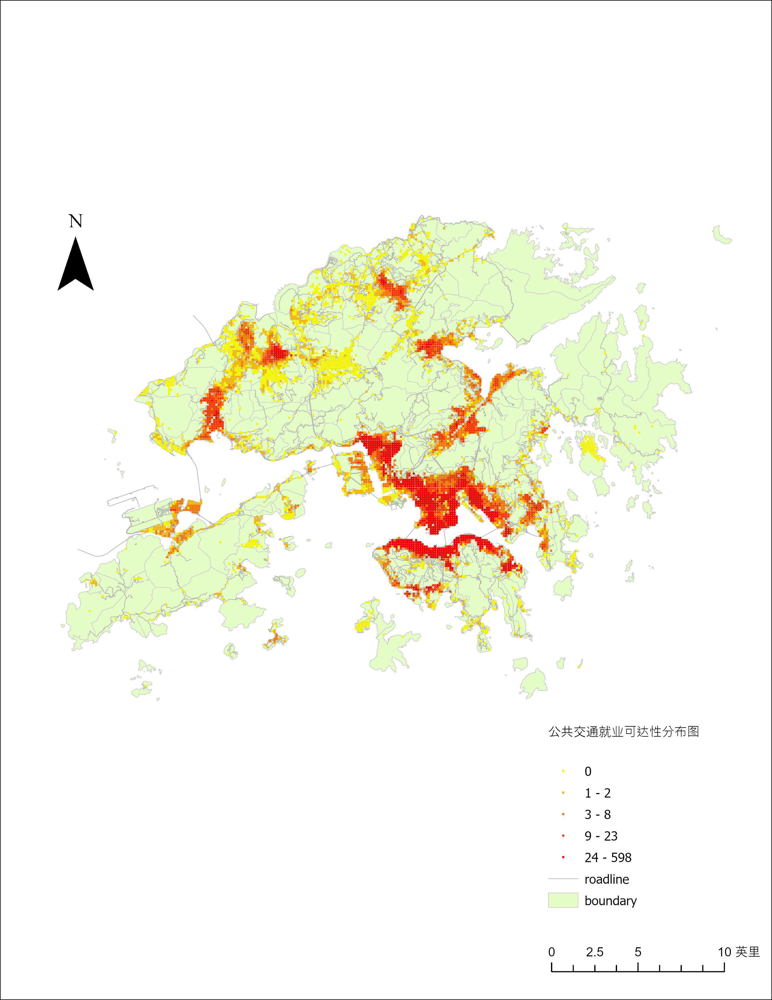

研究图层说明
以就业机会点及其 Total_jobs 属性呈现岗位集聚，并关联服务区到达时间。本页保留用户提供的公共交通就业可达性最终出图，网页交互地图则提供点位属性查询。
网页图层展示 5,724 个就业机会点及其服务区到达时间属性。
以就业机会点及其 Total_jobs 属性呈现岗位集聚，并关联服务区到达时间。本页保留用户提供的公共交通就业可达性最终出图，网页交互地图则提供点位属性查询。
将公共交通网络、就业岗位或网格点统一至同一坐标系统，并建立就业机会字段与空间位置的对应关系。
依据公共交通时间成本或服务范围计算岗位机会可达性，再按数值分级渲染，识别就业资源的集聚与低可达区域。

就业可达性：在既定公共交通网络与时间预算下，可获得的就业机会数量或机会加权值